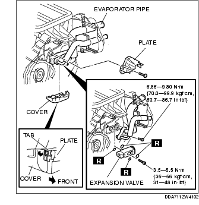

Expansion valve removal/installation
1. Disconnect the negative battery cable.
2. Discharge the refrigerant from the system. (See REFRIGERANT RECOVERY.) (See REFRIGERANT CHARGING.)
- • If moisture or foreign material enters the refrigeration cycle, cooling ability will be lowered and abnormal noise will occur. Always immediately plug all open fittings after removing any refrigeration cycle parts to keep moisture or foreign material out of the cycle.
3. Disconnect the cooler hose (LO) and cooler pipe. Do not allow compressor oil to spill. (See REFRIGERANT LINES REMOVAL/INSTALLATION.)
4. Remove the lower panel. (See LOWER PANEL REMOVAL/INSTALLATION.)
5. Loosen the clutch pedal bracket bolt until the tip of the bolt shaft is even with the surface of the bracket. (MTX vehicle)
6. Remove the cover by releasing the tab of the plate.
7. Shift the seal plate.
8. Remove the bolt and shift the evaporator pipe. Do not allow compressor oil to spill.
9. Remove the plate.
10. Remove the expansion valve. Do not allow compressor oil to spill.

11. Install in the reverse order of removal.
12. Perform the refrigerant system performance test. (See REFRIGERANT SYSTEM PERFORMANCE TEST.)